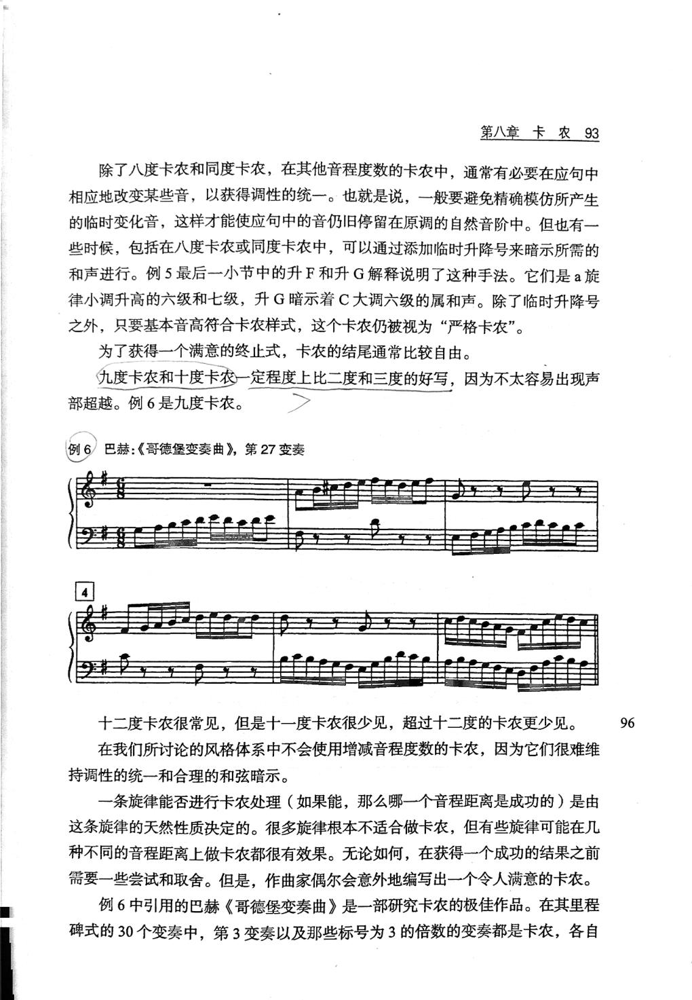

PDF 第 107 页 · 印刷页约 93
第八章 卡农
第八章卡农93
除了八度卡农和同度卡农，在其他音程度数的卡农中，通常有必要在应句中
相应地改变某些音，以获得调性的统一。也就是说，一般要避免精确模仿所产生
的临时变化音，这样才能使应句中的音仍旧停留在原调的自然音阶中。但也有一
些时候，包括在八度卡农或同度卡农中，可以通过添加临时升降号来暗示所需的
和声进行。例5最后一小节中的升F和升G解释说明了这种手法。它们是a旋
律小调升高的六级和七级，升G暗示着C大调六级的属和声。除了临时升降号
之外，只要基本音高符合卡农样式，这个卡农仍被视为“严格卡农”。
为了获得一个满意的终止式，卡农的结尾通常比较自由。
九度卡农和十度卡农一定程度上比二度和三度的好写，因为不太容易出现声
部超越。例6是九度卡农。
巴赫：《哥德堡变奏曲》，第27变奏
例6
4
十二度卡农很常见，但是十一度卡农很少见，超过十二度的卡农更少见。
96
在我们所讨论的风格体系中不会使用增减音程度数的卡农，因为它们很难维
持调性的统一和合理的和弦暗示。
一条旋律能否进行卡农处理（如果能，那么哪一个音程距离是成功的）是由
这条旋律的天然性质决定的。很多旋律根本不适合做卡农，但有些旋律可能在几
种不同的音程距离上做卡农都很有效果。无论如何，在获得一个成功的结果之前
需要一些尝试和取舍。但是，作曲家偶尔会意外地编写出一个令人满意的卡农。
例6中引用的巴赫《哥德堡变奏曲》是一部研究卡农的极佳作品。在其里程
碑式的30个变奏中，第3变奏以及那些标号为3的倍数的变奏都是卡农，各自
- 非八度卡农要作调性调整
精确移位可能把旋律带入临时升降号或远关系。为了留在原调，常须在应句中改动个别音；这种调整不破坏卡农关系。
“在其他音程度数的卡农中，通常有必要在应句中相应地改变某些音，以获得调性的统一。”